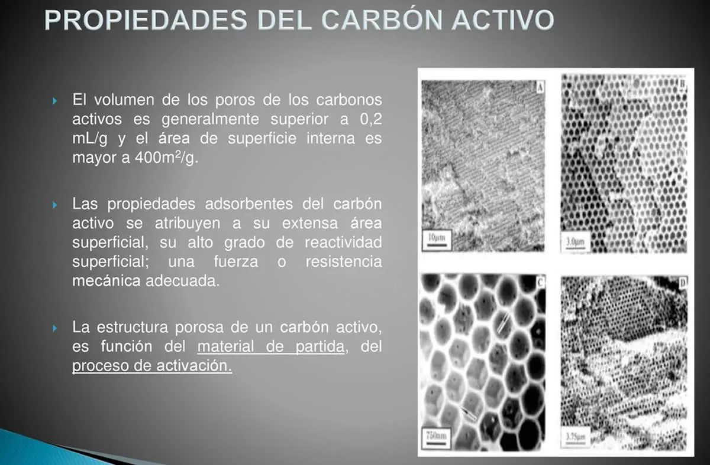

Propiedades del carbón activado
El carbón activado elaborado a partir de cáscara de plátano es un material poroso de origen vegetal, económico y amigable con el medio ambiente. Su estructura altamente porosa y su amplia superficie específica le otorgan una excelente capacidad de adsorción, permitiéndole remover eficientemente contaminantes como metales pesados, colorantes, compuestos orgánicos e incluso algunos gases. Además, presenta una baja densidad aparente, contenido moderado de humedad y un nivel bajo de cenizas, características que lo hacen ideal para aplicaciones en purificación de agua y tratamiento de efluentes.
Dependiendo del método de activación (química o fisica), el carbón activado puede presentar un pH superficial ácido, neutro o básico, y su superficie contiene grupos funcionales como hidroxilos, carboxilos y carbonilos, que mejoran su afinidad por distintos tipos de contaminantes. También es resistente térmicamente, posee un color negro intenso y una textura rugosa, lo que indica una buena carbonización. Gracias a su origen renovable y su capacidad para reutilizar residuos orgánicos, representa una opción sostenible y eficiente frente a los carbones activados comerciales.
